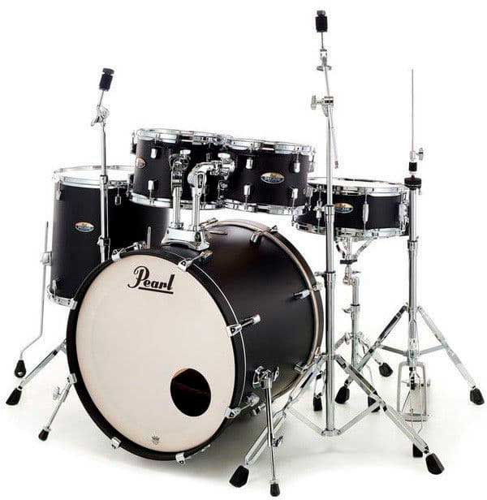
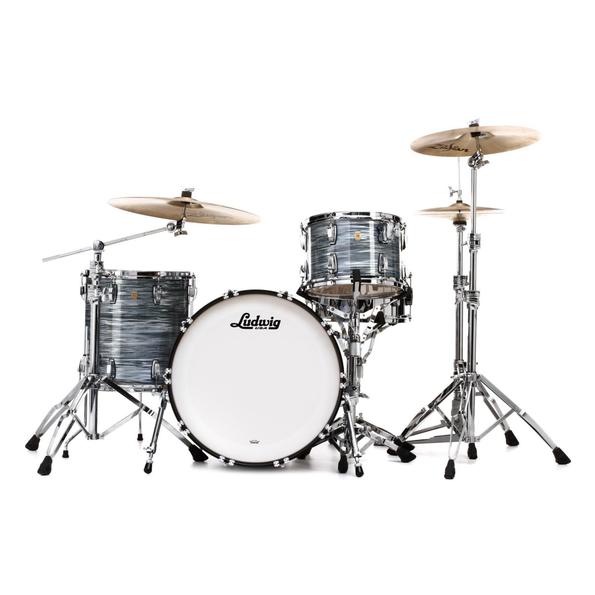
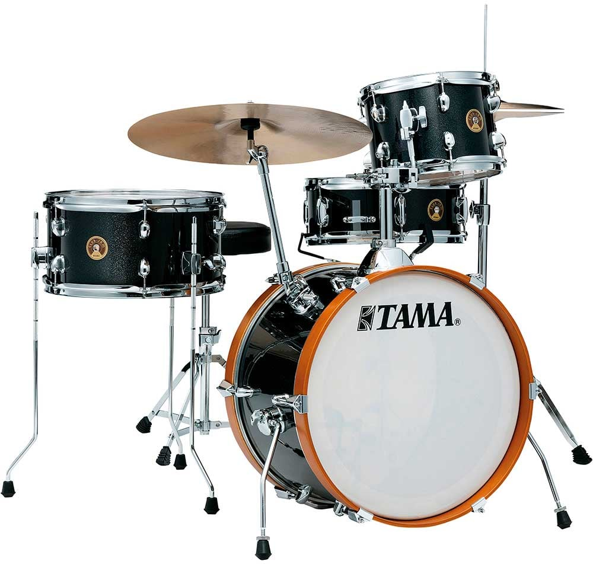
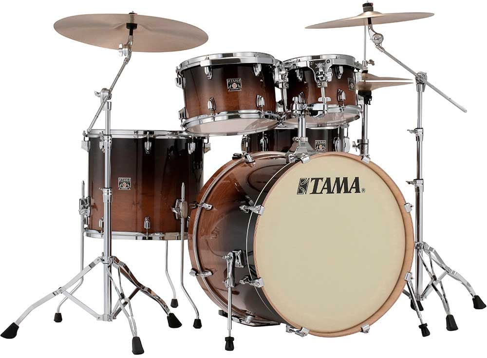
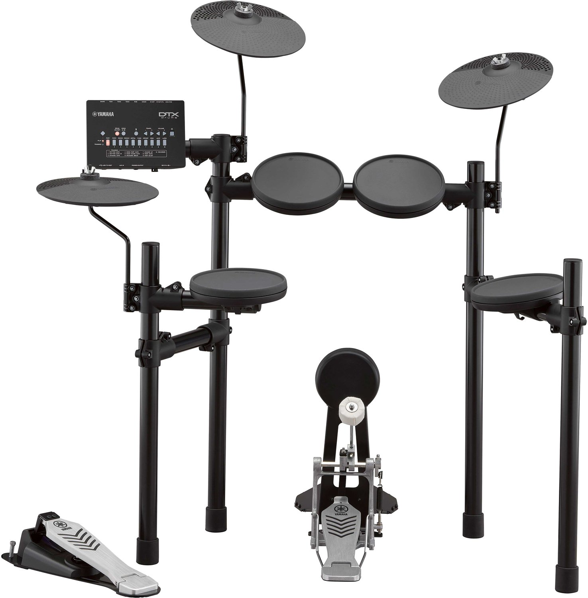
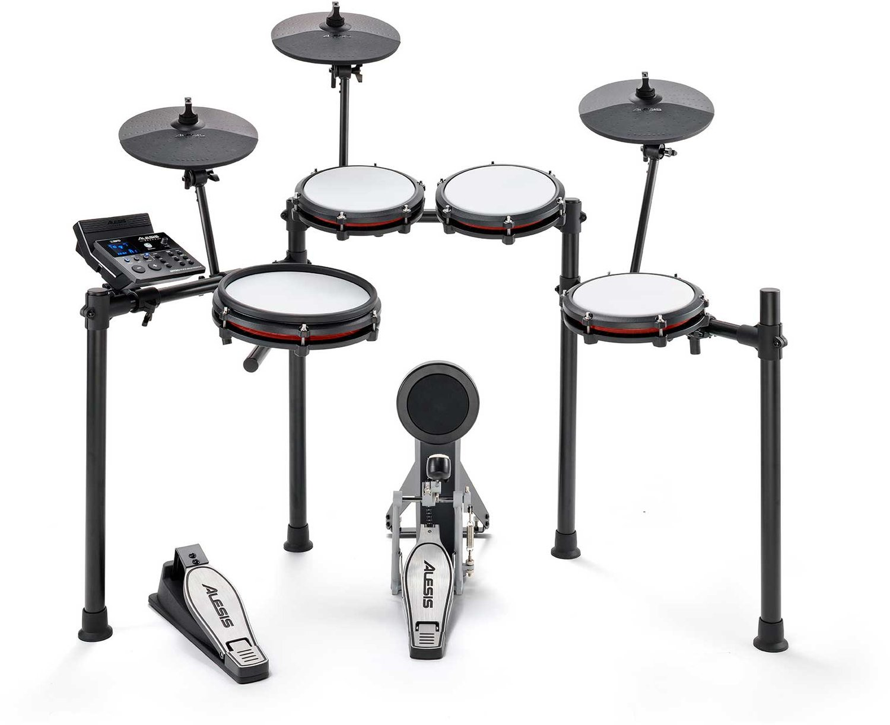
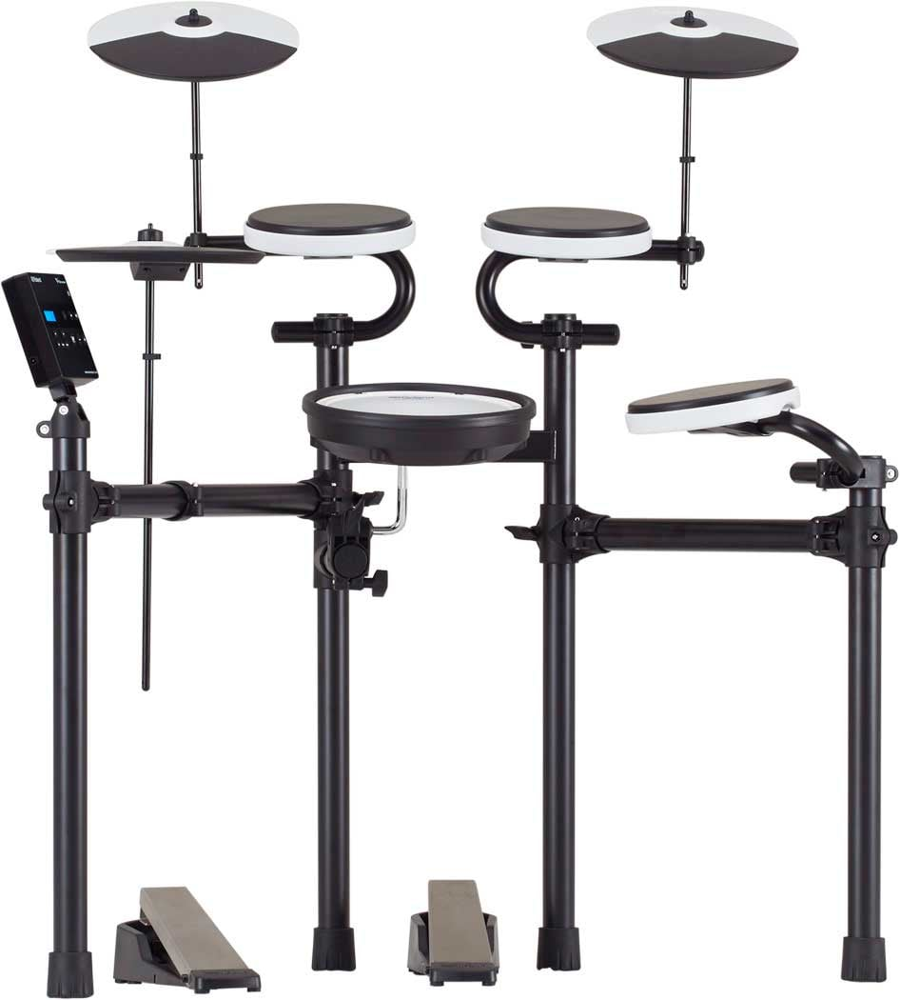
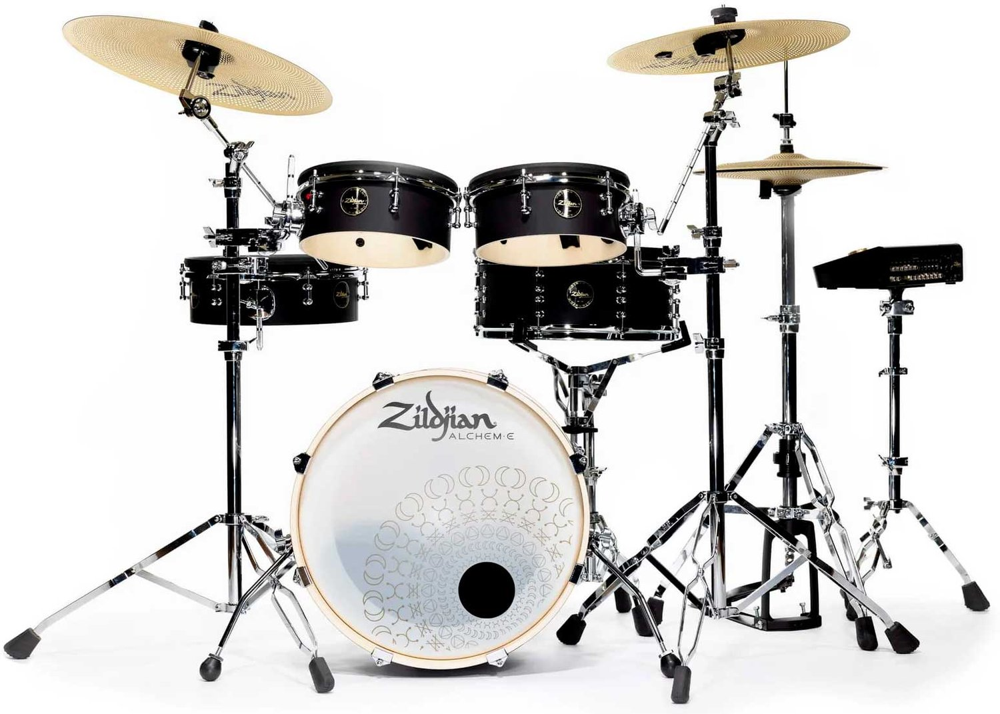

Bateria Akustikoak

Pearl DMP925S-C227 Decade Set Satin Slate Black
Kalitate handiko bateria akustikoa, soinu argi eta orekatuarekin. Bere danborren erantzun dinamikoari esker, rocka, popa eta beste estilo musikal batzuk jotzeko aproposa da, entseguetarako zein zuzeneko emanaldietarako.
1.099 €
Erosi →
Ludwig Legacy Classic Mahogany Downbeat
Bateria akustiko dotorea, mahoiaren soinu bero eta sakonarekin. Erresonantzia aberatsa eta izaera vintage nabarmena eskaintzen ditu, jazz, blues eta rock klasikoa jotzeko ezin hobea.
5.789 €
Erosi →
Tama LJK48S-CCM Club-Jam
Bateria akustiko trinkoa eta eramangarria, espazio txikietan jotzeko eta muntaketa azkarrak egiteko diseinatua. Soinu bizia eta estilo retro erakargarria ditu, tabernetan, entseguetan eta zuzeneko emanaldi intimoetan erabiltzeko aproposa.
8.045 €
Erosi →
Tama CL52KRS-CFF Superstar Classic
Bateria akustiko polifazetikoa, eraso argiarekin eta soinu indartsu eta orekatuarekin. Diseinu klasikoa eta erantzun dinamiko ona eskaintzen ditu, rocka, popa eta bestelako musika-estiloak jotzeko egokia.
15.690 €
Erosi →Bateria Elektronikoak

Yamaha DTX-432K
Bateria elektronikoa, jotzeko erantzun errealista duten padekin eta erritmoak lantzeko soinu ugarirekin. Entseguak egiteko, koordinazioa hobetzeko eta bateria jotzen ikasten hasteko aukera bikaina da.
550 €
Erosi →
Alesis Nitro Max Kit
Bateria elektroniko osoa, sareko mesh larruekin eta jotze-sentsazio naturalarekin. Soinu-kit ugari eta Bluetooth konexioa eskaintzen ditu, etxean praktikatzeko, abestiekin jotzeko eta erritmo berriak sortzeko aproposa.
799 €
Erosi →
Roland TD-02KV
Bateria elektroniko trinkoa, Roland-en soinu ezagunekin eta praktikatzeko funtzio erabilgarriekin. Espazio gutxi behar du, eta entzungailuekin jotzeko aukera ematen du, etxean zarata gutxiago sortuz.
999 €
Erosi →
Zildjian Alchem-E Bronze EX E-Drum Kit
Bateria elektroniko aurreratua, bateria akustikoaren sentsazioa eta soinuaren kontrol digitala uztartzen dituena. Jotze-adierazkortasun handia eta soinu-aukera zabalak eskaintzen ditu, bateria-jotzaile zorrotzentzat eta estudioko erabilerarako aproposa.
1.459 €
Erosi →